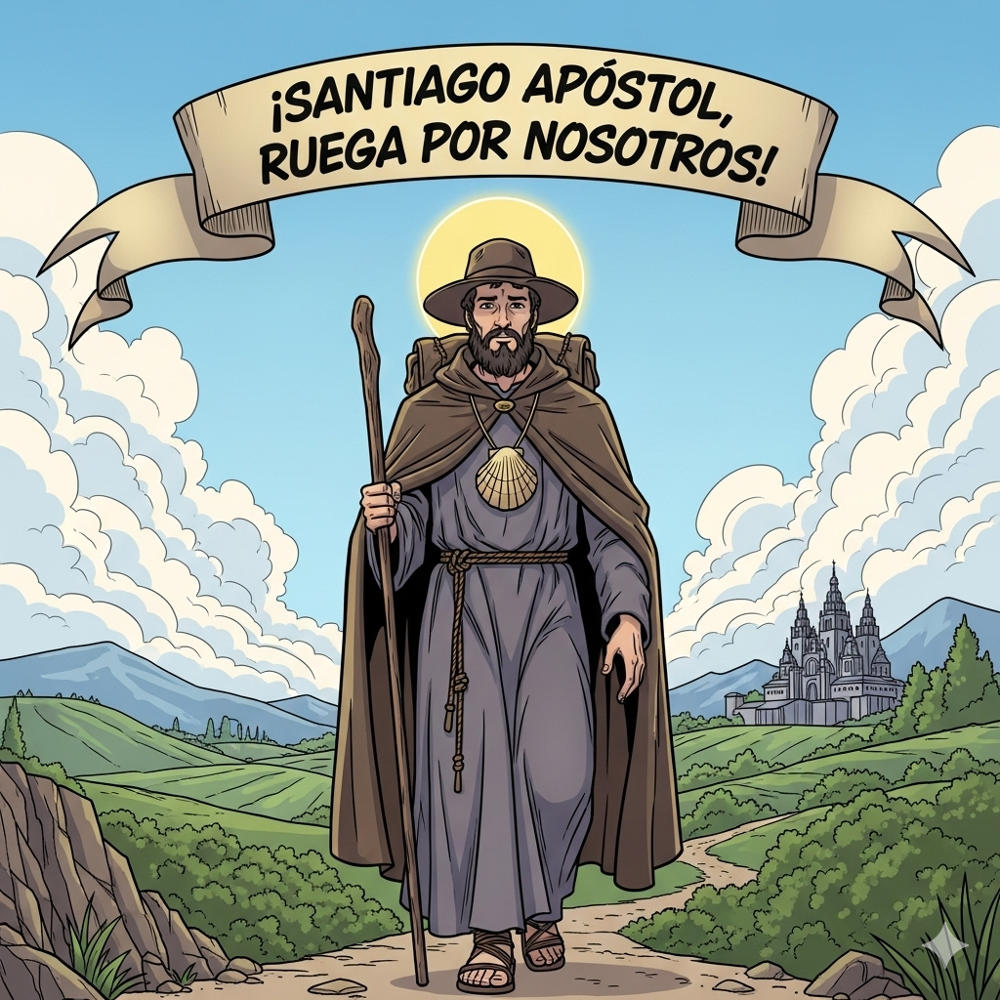

Santiago el Mayor
El Apóstol del Trueno
🙏 Oración Inicial
📖 Historia de Santiago
Santiago, llamado "el Mayor" para distinguirlo del otro apóstol Santiago, era hijo de Zebedeo y hermano de Juan. Trabajaba como pescador en el mar de Galilea junto a su familia cuando Jesús lo llamó para ser su discípulo.
Jesús le puso el sobrenombre de "Boanerges", que significa "hijo del trueno", probablemente por su carácter impetuoso y ardiente. Santiago formó parte del círculo íntimo de Jesús, junto con Pedro y Juan, y estuvo presente en momentos importantes como la Transfiguración y la agonía en el huerto de Getsemaní.
Después de la resurrección de Jesús, Santiago predicó el Evangelio con gran valentía. Fue el primer apóstol en dar su vida por Cristo, siendo martirizado por orden del rey Herodes Agripa alrededor del año 44 d.C. Su muerte está registrada en los Hechos de los Apóstoles.
Según la tradición, Santiago predicó en España antes de su martirio, y sus restos fueron trasladados a Santiago de Compostela, donde se encuentra una de las rutas de peregrinación más importantes del cristianismo.
🎨 Actividad Creativa
"El Camino de Santiago"
Materiales: Papel, lápices de colores, pegatinas de estrellas
Instrucciones:
- Dibuja un camino serpenteante en tu papel, como el Camino de Santiago
- A lo largo del camino, dibuja diferentes paradas que representen momentos importantes de tu vida de fe
- En cada parada, escribe una palabra que represente una virtud cristiana (amor, paciencia, generosidad, etc.)
- Decora el camino con estrellas, como las que guían a los peregrinos
- Al final del camino, dibuja una iglesia o una cruz
Reflexión: Así como Santiago siguió a Jesús con valentía, nosotros también estamos en un camino de fe. 쯈ué pasos darás hoy para seguir mejor a Jesús?
💭 Reflexión
Preguntas para pensar:
- 쯈ué significa para ti tener valentía en la fe como Santiago?
- 쮺칩mo puedes responder mejor cuando Jesús te llama a hacer algo bueno?
- 쯈ué "truenos" o dificultades enfrentas en tu vida, y cómo puede ayudarte la fe?
- 쮻e qué manera puedes ser un "peregrino" en tu vida diaria?
Mensaje principal: Santiago nos enseña que seguir a Jesús requiere valentía y decisión. Como él, estamos llamados a dejar todo lo que nos aleja de Dios y caminar con fe, sabiendo que Jesús nos acompaña en nuestro camino.